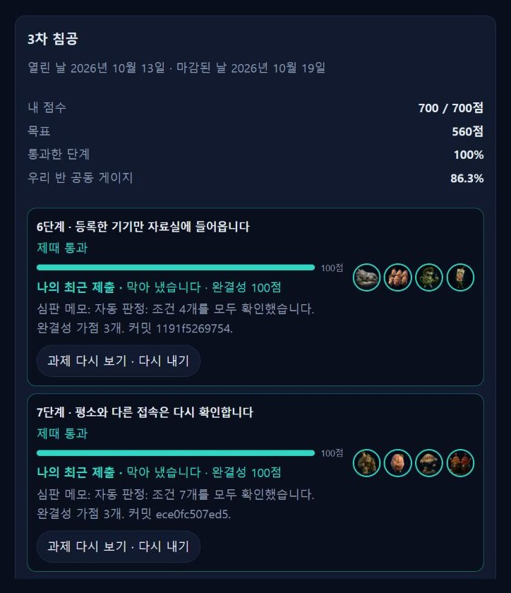
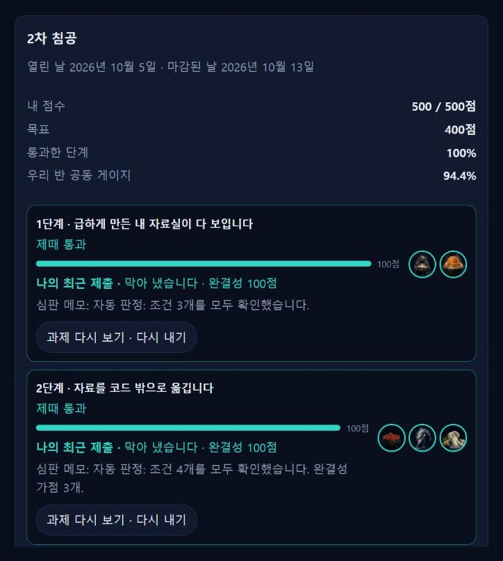
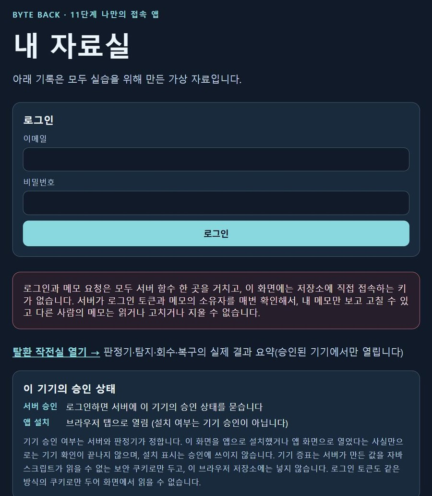
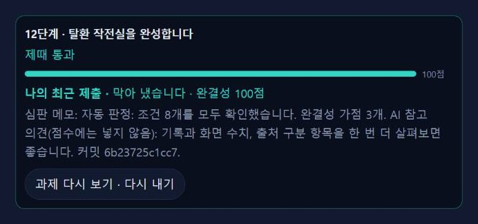

DEFENSE 01 · 1~12단계 · 2026.10
BYTE BACK 방어전
점령된 자료실 탈환
외부에 그대로 노출된 웹 자료실을 12단계에 걸쳐 다시 지켜 낸 과제입니다. 접근 통제부터 기기 승인, 이상 접속 판정, 탐지와 권한 회수, 백업 복원, 관제 화면까지 방어를 한 겹씩 쌓았습니다.
Vercel 서버 함수Supabase 인증·DB접근 통제기기 승인백업 복원관제 화면
12 / 12
단계 모두 제때 통과
(포털 판정 기록)
1,200
/ 1,200점
2차 500 · 3차 700
FLOW방어를 쌓은 순서
단계가 바뀔 때마다 앞 단계의 방어는 그대로 두고 한 겹을 더했습니다. 각 단계는 실제로 있었던 침해 유형에 맞춰 설계된 과제입니다.
- 노출 차단코드 안에 있던 자료를 DB로 옮기고, 공개 파일로 자료가 보이던 경로를 막음1~2단계
- 로그인로그인하지 않았거나 가짜 토큰으로 온 요청은 401로 거부3단계
- 내 자료만남의 메모 번호 요청은 404, 소유자 값을 바꿔 보낸 요청은 4034단계
- 서버 한 곳으로모든 요청을 서버 함수로 모으고, 화면에는 DB 키를 두지 않음5단계
- 기기·이상 접속등록 기기만 통과, 평소와 다른 접속은 추가 인증, 자료별 구역 분리6~8단계
- 탐지·회수10분 안에 120건을 넘는 조회를 이상 행위로 보고 권한 회수를 제안9단계
- 백업 복원사본에서 본인 메모 한 건을 되살리고, 복원 전후를 대조해 기록10단계
- 기기 승인 앱설치형 웹앱 + 서버가 승인한 기기에서만 자료실이 열림11단계
- 탈환 작전실판정·탐지·회수·복구 결과를 서버가 실제로 조회한 값으로만 표시12단계
EVIDENCE판정 기록과 화면
점수는 ALEPH 포털의 자동 판정(단계별 조건 확인) 기록 그대로입니다. 캡처는 2026-11-07에 포털과 배포 사이트에서 직접 찍었습니다.
ALEPH 포털 · 3차 침공 판정 기록

6~12단계 700 / 700점. 단계마다 조건을 모두 확인했다는 자동 판정과 커밋 번호가 남아 있습니다.
ALEPH 포털 · 2차 침공 판정 기록

1~5단계 500 / 500점. 노출 차단, 로그인, 소유자 검사, 서버 한 곳으로 모으기까지의 판정입니다.
배포 사이트 · 11단계 접속 앱 첫 화면

로그인 전 화면. 자료실과 탈환 작전실은 로그인하고 서버가 승인한 기기에서만 열립니다. 앱으로 설치했다는 사실만으로는 승인되지 않습니다.
ALEPH 포털 · 12단계 판정

12단계 조건 8개 모두 확인. 함께 남은 AI 참고 의견(점수 제외)도 그대로 실었습니다.
TROUBLESHOOTING막혔던 곳과 해결
가장 오래 걸린 세 단계입니다. 공통점은 "화면에는 됐다고 나오는데 판정은 실패"였고, 서버 기록과 채점 방식을 확인해서 풀었습니다.
10단계 · 가장 오래 막힘
백업에서 복원했는데 "복원 불일치" 판정
- 상황
- 사본 테이블에서 메모를 되살리는 기능을 만들었지만, 판정은 계속 "사본 검증 안 됨 · 복원 결과 불일치"였습니다.
- 시도
- 소유자 충돌 처리, 정책 사본 검증, 감사 기록 추가 등 가설을 여러 개 세워 고쳤지만 모두 실패했습니다. 그러다 제출 직후 배포 서버 로그에 심판의 요청이 하나도 없다는 것을 확인했고, 심판은 배포된 앱을 직접 호출하지 않는다는 것을 알게 됐습니다.
- 해결
- 사본 테이블을 시험 계정의 메모 한 건만 남기고 정리했습니다. 복원할 때는 쓰기 직전과 직후에 같은 메모를 다시 조회해 번호·소유자·내용 지문(해시)을 대조하고, 어긋나면 그 한 건만 되돌리게 했습니다.
- 결과
- 통과. 코드를 바꾸지 않고 같은 커밋을 다시 내서 통과한 적도 있어, 판정이 매번 같지는 않다는 점도 기록해 두었습니다.
11단계
"키 노출" 판정 — 로그인 토큰을 둔 위치
- 상황
- 로그인 토큰이 화면의 스크립트가 읽을 수 있는 브라우저 저장소에 있어, 화면이 공격받으면 토큰이 새어 나갈 수 있는 구조였습니다.
- 해결
- 토큰은 화면 스크립트가 읽을 수 없는 보안 쿠키에만 두고, 새로고침할 때는 서버가 그 쿠키로 로그인 상태를 되살리도록 서버와 화면을 함께 바꿨습니다.
- 추가
- 같은 단계에서 화면 파일 하나(약 26KB)가 너무 커서 심판이 끝까지 읽지 못하는 문제도 있었습니다. 파일을 세 개로 나눠 해결했습니다.
- 결과
- 통과. 비밀값은 화면·코드·저장소 어디에도 두지 않는다는 원칙을 이 단계에서 정했습니다.
12단계
채점 환경에서 할 수 없는 점검을 하고 있었음
- 상황
- 스스로 점검하는 기능이 차단 확인을 위해 쓰기 요청까지 보냈는데, 심판의 격리 환경은 공개 주소에 대한 읽기 요청만 허용했습니다. 그래서 화면 결과와 심판 기록이 맞지 않았습니다.
- 해결
- 판정 환경에서 할 수 없는 점검은 "미실행"으로 정직하게 표시하고, 실제 차단 확인은 최종 점검 스크립트와 작전실 화면에서만 하도록 나눴습니다.
- 결과
- 통과. 작전실은 서버가 실제로 실행·조회한 결과만 보여 주고, 실행하지 못한 항목은 따로 표시합니다.
LESSONS이 과제에서 남긴 원칙
기록으로 증명한다화면 문구가 아니라 서버·DB·로그에 남은 값으로 확인합니다. 하지 못한 확인은 "미실행"으로 구분합니다.
비밀값은 두지 않는다토큰은 보안 쿠키에, 키는 배포 환경 설정에만 둡니다. 코드·저장소·제출물에는 넣지 않습니다.
판정 환경부터 확인한다막히면 코드를 고치기 전에 채점 방식과 그 환경의 제약을 먼저 확인합니다.
작업 방식: 코드는 AI(Claude)로 작성했습니다. 저는 단계마다 요구 조건을 정리하고, 판정 결과와 배포 서버 로그를 확인해 원인 가설을 세우고, 무엇을 고쳐 다시 낼지 판단했습니다. 화면의 자료는 모두 실습용 가상 자료입니다.